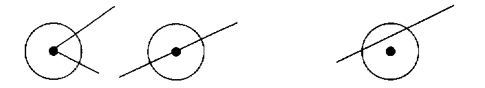
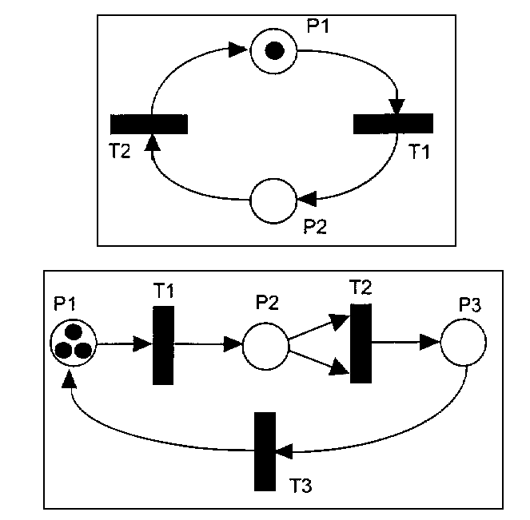
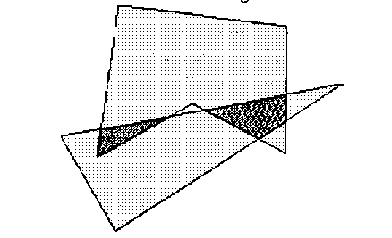
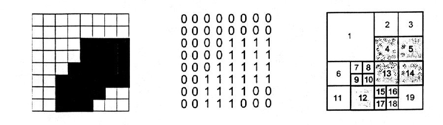
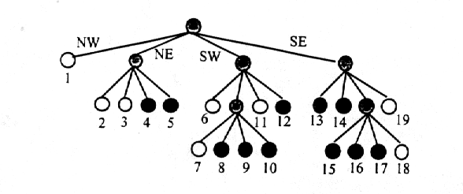

The 1998 22nd
Annual acm International Collegiate
Programming Contest World
Finals
sponsored by IBM
Problem A
Crystal Clear
Input: crystal.in
A new high technology company has developed a material that it hopes to market as an insulator. The material consists of crystals and the square lattice on which the crystals are grown. The points on the lattice are at 1 centimeter intervals. The crystals are formed from seeds that are planted at the lattice points. Each crystal grows into a circle of diameter 1 centimeter.
Using this material in applications will require cutting the lattice into pieces. One of the problems in cutting the lattice is that some crystals will be sliced in the process. Slicing a crystal other than through the center completely destroys that crystal's insulation properties. (A cut touching a crystal tangentially does not destroy that crystal's insulation property.)
¡¡
| Retain insulation | ¡¡ | Lose insulation |

The insulation capacity of a piece is directly proportional to the total area of the insulating crystals (or parts of crystals) that are on the piece. The following figure shows a polygonal piece with its insulating crystals shaded.
¡¡
Your job is to determine the insulating capacity of such polygonal pieces by computing the total area of the insulating crystals in it.
Input
The input consists of a sequence of polygon descriptions. Each description consists of a positive integer n (3 < n < 25) representing the number of vertices, followed by n pairs of integers. Each pair is the x and y coordinates of one vertex of the polygon. (The coordinate system is aligned with the lattice such that the integer coordinates are precisely the lattice points.)
Vertices of each polygon are given in clockwise order. No polygon will be degenerate. No coordinate Will be larger than 250 in absolute value.
The input is terminated by zero for the value of n.
Output
For each polygon, first print its number (¡°Shape 1¡±, ¡°Shape 2¡±, etc.) and then the area of the insulating crystals in cm2, exact to three digits to the right of the decimal point.
The following sample corresponds to the previous illustration.
Sample Input
5
0 2
3 5
6 3
6 0
1 0
0
Output for the Sample Input
Shape 1
Insulating area = 15.315 cm^2
¡¡
The 1998 22nd
Annual acm International Collegiate
Programming Contest World
Finals
sponsored by IBM
Problem B
Flight Planning
Input: flight.in
Your job is to write a program that plans airplane flights. Each flight consists of a series of one or more legs. Your program must choose the best altitude for each leg to minimize the amount of fuel consumption during the trip.
The airplane has a fixed airspeed, given by the constant VCRUISE, and a most-efficient cruising altitude, AOPT. When flying at altitude AOPT, fuel consumption in gallons per hour is given by GPHOPT. When flying at an altitude that is different from AOPF, fuel consumption increases by GPHEXTRA for each 1000 feet above or below AOPT. The flight starts and finishes at an altitude of 0. Each 1000 foot climb burns an extra amount of fad given by CLIMBCOST (there is no reduction in fuel consumption when you descend). Make the approximation that all climbing and descending is done in zero time at the beginning of each flight leg. Thus each leg is flown at a constant airspeed and altitude. For this problem, the airplane characteristics are given by the following constants:
VCRUISE 400 knots (a
knot is one nautical mile per hour)
AOPT 30,000 feet
GPHQPT 2000 gallons per hour
GPHEXTRA 10 gallons per hour for each 1000 feet
CLIMBCOST 50 gallons per 1000 feet of climb
Before each flight, you are given the length of each leg and the tailwind expected for each leg. A positive tailwind increases the airplane's speed over the ground, and a negative tailwind decreases its speed over the ground. For example, if airspeed is 400 knots and the tailwind is -50 knots, speed over the ground is 350 knots.
By policy, altitude for each leg must be some integer multiple of 1000 feet, between 20,000 and 40~000 feet, inclusive. Your program must compute the best altitude for each leg to minimize overall feel consumption for the trip, and must compute the fuel required for the trip.
Input
The first line
contains an integer N, representing the number of flights you are
requited to plain. Each flight consists of the following input
lines:
The first input line in a flight contains an integer K (0< K < 10), representing the number of legs in the flight.
The expected tailwind at altitudes between 20,000 and 40,000 feet is computed by linear interpolation. For example, the expected tailwind at 30,000 feet is halfway between the expected tailwind at 20,000 feet and the expected tailwind at 40,000 feet.
Output
Your program
must produce one output line for each flight. The output line
must contain the flight number (counting from the beginning of
the problem), the chosen altitude for each leg (in thousands of
feet), and the fuel required for the trip (in gallons, to the
nearest gallon).
Sample Input
2
2
1500 -50 50
1000 0 0
3
1000 50 0
2000 0 20
1300 -50 100
¡¡
Output for the Sample Input
Flight 1: 35 30
12985
Flight 2: 20 30 40 23903
¡¡
¡¡
The 1998 22nd
Annual acm International Collegiate
Programming Contest World
Finals
sponsored by IBM
Problem C
Lead or Gold
Input: leadgold.in
How to make gold from lead has baffled alchemists for centuries. At the last A1chemists Club Meeting (ACM), a sensational breakthrough was announced. By mixing the three chemicals Algolene, Basicine and Cobolase, in the correct ratio, one can create a mixture that transforms lead into gold. Since Algolene, Basicine and Cobolase (or A, B, C for short) are generally not sold individually, but rather mixed into solutions, this may not he easy as it seems.
Consider the following example. Two mixtures of Algolene, Basicine and Cobolase are available. in ratios of 1:2:3 and 3:7:1, respectively. By mixing these solutions in a ratio of 1:2 we obtain a solution of A, B, C with ratio 7:16:5. But there is no way to combine these mixtures into a new one with ratio 3:4:5. If we additionally had a solution of ratio 2:1:2, then a 3:4:5 mixture would be possible by combining eight parts of 1:2.3, one part of 3:7:l and five parts of 2:l:2.
Determining which mixing ratios we can obtain from a given set of solutions i~ no trivial task. But, as the ACM has shown, it is possibly a very profitable one. You must write a program to find mixing ratios.
Input
The input file
contains several test eases. The first line of each test case
contains an integer n (0 < n < 100) that represents the number of
mixtures in the test ease. The next n lines each contain
three non-negative integers ai , bi , ci ,
specifying the ratio ai : bi : ci in which
A, B, C occur in the ith mixture. At least one of these integers is
positive fur each mixture.
Finally, there is one line containing three non-negative integers a, b, c, which specify the ratio a:b:e in the desired solution. At least one of these integers is positive.
The input file is terminated with the integer 0 on a line by itself following the last test case.
Output
For each test
case, output the word ¡°Mixture¡±, followed by the ordinal number
of the test case. On the next line, if it is possible to obtain
the desired solution by mixing the input solutions, output the
word ¡°Possible¡± . Otherwise, output the word ¡°Impossible¡±.
Sample Input Output for the Sample Input
2 Mixture 1
1 2 3 Impossible
3 7 1
3 4 5 Mixture 2
3 Possible
1 2 3
3 7 1
2 1 2
3 4 5
0
¡¡
The 1998 22nd
Annual acm International Collegiate
Programming Contest World
Finals
sponsored by IBM
Problem D
Page Selection by Keyword Matching
Input: page.in
Anyone who has used the World Wide Web is familiar with search engines used to find pages matching a user-generated query. Many of these engines are quite sophisticated, using advanced algorithms and parallel searching techniques to provide fast, accurate responses.
This problem is somewhat simpler. A group of web pages has been classified by associating a list of keywords, given in decreasing order of relevance, with each page (i.e., the order of keywords is from the most specific keyword to the least specific). For example, a page on programming in Smalltalk has the keywords Small talk, programming, and computers in that order; the most relevant keyword is Smalltalk.
Queries also include a list of keywords, again from most to least relevant. For example, in a query consisting of the keyword Smalltalk followed by the keyword computers, Smalltalk is more important than computers.
In this problem you are to determine the top five (or fewer) pages that match each of an arbitrary number of queries. To determine the strength of the relationship between a query and a web page, assume the keywords for each page and each query are assigned integer weights, in descending order, starting with N, where N is the maximum number of keywords allowed for a web page and query. The strength of the relationship is the sum of the products of the weights associated with each keyword that appears both in the web page list and the query list. For example, assume the following web pages and keyword lists:
Page 1: Smalltalk,
programming, computers
Page 2: computers, programming
Page 3: computers, Smalltalk
For N equal 8, a query with keywords Smalltalk and programming in that order yields a strength rating of 113 for Page 1(8*8 + 7*7), 49 for Page 2 (7*7), and 56 for Page 3 (8*7). A query with keywords Smalltalk and computers yields a strength rating of 106 for Page 1 (8*8 + 7*6), 56 for Page 2 (7*8), and 112 for Page 3 (8*7 + 7*8).
Input
Input data
consist of one line for each web page and query. A line consists
of a code letter followed by a list of keywords. Code letters P,
Q, and E denote a page, a query, and the end of file
respectively. Code letters and keywords are separated by at least
one space. Ps and Qs may occur in any order. Pages are added
sequentially starting with one. Each page has at least one but no
more than 8 keywords. Each word consists of no more than 20
alphabetic characters. The case of characters in the keywords is
not significant. There will he a maximum of 25 pages in the
input.
Each query also has of a list of between one and eight keywords. Again, a keyword has no more than 20 alphabetic characters, case being insignificant. Number the queries sequentially starting with one.
Output
For each query,
identify the 5 (or fewer) pages read so far that are most
relevant to the query. Print a single line containing the
query identifier, a colon, and the page identifiers of the five
most relevant pages in the decreasing order of relevance. Page
identifiers consist of the letter ¡°P¡± followed by the page number.
Query identifiers consist of the letter ¡°Q¡± followed by the query number. If
several pages have the same relevance, list them by increasing
page number. Do not list pages that have no relationship (zero
strength), even if fewer than five pages are identified.
Sample Input
P Smalltalk
programming computers
P computers programming
F computers Smalltalk
P FORTRAN programming
P COBOL programming
F programming
Q Smalltalk
Q programming
Q computers
Q Smalltalk computers
Q Smalltalk programming
Q cooking French
E
Output for the Sample Input
Query Fages
Q1: P1 P3
Q2: P6 P1 P2 P4 P5
Q3: P2 P3 P1
Q4: P3 P1 P2
Q5: P1 P3 P6 P2 P4
Q6:
¡¡
The 1998 22nd
Annual acm International Collegiate
Programming Contest World
Finals
sponsored by IBM
Problem E
Petri Net Simulation
Input: petri.in
¡¡
A Petri net is a computational model used to illustrate concurrent activity. Each Petri net contains some number Qf places (represented by circles), transitions (represented by black rectangles), and directed edges used to connect places to transitions, and transitions to places. Each place can hold zero or more tokens (represented by black dots). Here are two examples:

In the first Petri net above, there are two places (P1 and P2) and two transitions (T1 and T2). P1 initially has one token; P2 has none. P1 is an input place for transition T1, and P2 is an output place for T1. In the second example there are three places and three transitions, with three tokens in P1. T2 has two input plates, both of which are P2.
Operation of a Petri Net
Each transition in a
Petri net is either enabled or disabled. A transition is enabled
if there is at least one token in each of its input places Any
transition can fire whenever it is enabled. If multiple
transitions are enabled, any one of them may fire. When a
transition fires, one token is removed from each of the input
places, and one token is added to each of the output places; this
is effectively done atomically, as one action. When there are no
enabled transitions, a net is said to be dead.
In the top example only T1 is enabled. When it fires one token is removed from P1, and one token is added to P2. Then T2 is enabled. When it fires one token is removed from P2, and one token is added to P1. Clearly this Petit net will repeat this cycle forever.
The bottom example is more interesting. T1 is enabled and fires, effectively moving a token to P2. At this point T1 is still the only enabled transition (T2 requires that P2 have two tokens before it is enabled). T1 fires again, leaving one token in P1 and two tokens in P2, Now both TI and T2 are enabled, Assume T2 fires, removing two tokens from P2 and adding one token to P3. Now T1 and T3 are enabled. Continuing until no more transitions are enabled, you should see that only one token will be left in P2 after 9 transition firings. (Note that if T1 had fired instead of T2 when both were enabled, this result would have been the same after 9 firings.)
In this problem you will be presented with descriptions of one or more Petri nets For each you are to simulate some specified number of transition firings, NE, and then report the number of tokens remaining in the places. If the net becomes dead before NE transition firings, you are to report that fact as well.
Input
Each Petri net
description will first contain an integer NP (0 < NP < 100)
followed by NP integers specifying the number of tokens initially
in each of the places numbered 1, 2, ¡, NP. Next there will appear an
integer NT (0 <NT < 100) specifying the number of
transitions. Then, for each transition (in increasing numerical
order 1,2,¡, NT) there will appear a list of integers
terminated by zero. The negative numbers in the list will
represent the input places, so the number -n indicates
there is an input place at n. The positive numbers in the
list will indicate the output places, so the number p
indicates an output place at p. There will be at least one
input place and at least one output place for each transition.
Finally, after the description of all NT transitions, there will
appear an integer indicating the maximum number of firings you
are to simulate, NE The input will contain one or more Petri net
descriptions followed by a zero.
Output
For each Petri
net description in the input display three lines of output. On
the first line indicate the number of the input case (numbered
sequentially starting with 1) and whether or not NE transitions
were able to fire. If so, indicate the net is still live after NF
firings. Otherwise indicate the net is dead, and the number of
firings which were completed. In either case, on the second line
give the identities of the places which contain one or more
tokens after the simulation, and the number of tokens each such
place contains. This list should be in ascending order. The third
line of output for each set should be blank.
The input data will be selected to guarantee the uniqueness of the correct output displays.
Sample Input
2
1 0
2
-1 2 0
-2 1 0
100
3
3 0 0
3
-1 2 0
-2 -2 3 0
-3 1 0
100
0
Output for the Sample Input
Case 1: still live
after 100 transitions
Places with tokens: 1 (1)
Case 2: dead after 9 transitions
Places with tokens: 2 (1)
The 1998 22nd
Annual acm International Collegiate
Programming Contest World
Finals
sponsored by IBM
Problem F
Polygon Intersections
Input: poly.in
Most drawing or illustration programs have simple tools for creating polygon objects. The better ones can find the regions that are the intersections of two polygons. The picture below shows two polygons, one is a pentagon and the other is a triangle. Their intersection consists of the two dark regions.

IBM has just hired you as a member of a programming team that will create a very sophisticate drawing/illustration program. Your task is to write the part of the program that deals with polygon intersections. Your boss has told you to delay work on the user interface and focus only on the geometric representations of the intersections.
A polygon in the Cartesian plane can be represented by a sequence of points that are its vertices. The vertices in the sequence appear in the order in which they are visited when traveling clockwise around the polygon¡¯s boundary; so any two adjacent vertices in the sequence are the endpoints of a line segment that is one of the polygon¡¯s sides. The last and the first vertices in the sequence are also endpoints of a side. Vertices are identified by their x- and y-coordinates. Assume the following about each polygon.
The intersection of two polygons consists of 0 or more connected regions, Your problem is to take two polygons and determine the regions of their intersection that are polygons satisfying the criteria above.
¡¡
Input
The input
contains several data sets, each consisting of two polygons. Each
polygon appeais as a sequence of numbers:
n x1 y1x2 y2 ¡ xn yn
where the integer n is the number of vertices of the polygon, and the real coordinates (x1 , y1) through (xn , yn) are the boundary vertices. The end of input is indicated by two 0¡¯s for the values of n. These two 0¡¯s merely mark the end of data and should not be treated as an additional data set.
¡¡
Output
For each data
set, your program should output its number (Data set 1, Data set
2, etc.), and the number of regions in the intersection of its
two polygons. Label each region in the data set (Region 1, Region
2, etc.) and list its vertices in the order they appear when they
are visited going either clockwise or counterclockwise around the
boundary of the region. The first vertex printed should be the
vertex with the smallest x-coordinate (to break ties, use the
smallest y-coordinate). No region may include degenerate
parts (consisting of adjacent sides whose angle of intersection
is 0). If the three endpoints of two adjacent sides are
collinear, the two sides should be merged into a single side.
Print each vertex in the standard form (x, y),
where x and y have two digits to the right of the
decimal.
The following sample input contains exactly one data set. (The data set corresponds to the illustration at the beginning of this problem description.)
Sample Input
3 2 1 0.5 3.5 8 5
5 1.5 3 2 7 6.5 6.5 6.5 3.25 4 4.5
0
0
Output for the Sample Input
Data Set 1
Number of intersection regions: 2
Region 1:(1.50,3.00) (1.59,3.72) (3.25,4.05)
Region 2:(4.43,4.29) (6.50,4.70) (6.50,4.00) (5.86,3.57)
¡¡
¡¡
The 1998 22nd
Annual acm International Collegiate
Programming Contest World
Finals
sponsored by IBM
Problem G
Spatial Structures
Input: spatial.in
Computer graphics, image processing, and GIS (geographic information Systems) all make use of a data structure called a quadtree. Quadtrees represent regional or block data efficiently and support efficient algorithms for operations like the union and intersection of images.
A quadtree for a black and white image is constructed by successively dividing the image into tour equal quadrants. If all the pixels in a quadrant are the same color (all black or all white) the division process for that quadrant stops. Quadrants that contain both black and white pixels are subdivided into four equal quadrants and this process continues until each subquadrant consists of either all black or all white pixels. It is entirely possible that some subquadrants consist of a single pixel

For example, using 0 for white and 1 for black, the region on the left below is represented by the matrix of zeros and ones in the middle. The matrix is divided into subquadrants as shown on the right where gray squares represent subquadrants that consist entirely of black pixels
A quadtree is constructed from the block structure of an image. The root of the tree represents the entire array of pixels. Each non-leaf node of a quadtree has four children, corresponding to the four subquadrants of the region represented by the node. Leaf nodes represent regions that consist of pixels of the same color and thus are not subdivided. For example, the image shown above, with the block structure on the right, is represented by the quadtree below.

Leaf nodes are white if they correspond to a block of all white pixels, and black if they correspond to a block of all black pixels. In the tree, each leaf node is numbered corresponding to the block it represents in the diagram above. The branches of a non-leaf node are ordered from left-to-right as shown for the northwest, northeast, southwest, and southeast quadrants (or upper-left, upper-right, lower-left, lower-right).
A tree can be represented by a sequence of numbers representing the root-to-leaf paths of black nodes. Each path is a base five number constructed by labeling branches with 1, 2, 3, or 4 with NW=1, NE = 2, SW = 3, SF = 4, and with the least significant digit of the base five number corresponding to the branch from the root. For example, the node labeled 4 has path NE, SW which is 325 (base 5) or 1710 (base 10); the node labeled 12 has path SW, SE or 435 = 2310; and the node labeled 15 has path SE, SW, NW or 1345 = 4410 . The entire tree is represented by the sequence of numbers (in base 10)
9 14 17 22 23 44 63 69 88 94 113
Write a program that converts images into root-to-leaf paths and converts root-to-leaf paths into images.
Input
The input
contains one or more images. Each image is square, and the data
for an image starts with an integer n, where n is
the length of a side of the square (always a power of two, with |
n |< 64) followed by a representation of the image. A
representation is either a sequence of n2 zeros and ones comprised of | n |
lines of | n | digits per line, or the sequence of numbers
that represent the root-to-leaf paths of each black node in the
quadtree that represents the image.
If n is positive, the zero/one representation follows; if n is negative, the sequence of black node path numbers (in base 10) follows. The sequence is terminated by the number - 1. A one-node tree that represents an all-black image is represented by the number 0. A one-node tree that represents an all-white image is represented by an empty sequence (no numbers).
The end of data is signaled by a value of 0 for n.
Output
For each image
in the input, first output the number of the image, as shown in
the sample output. Then output the alternate form of the image.
If the image is represented by zeros and ones, the output consists of root-to-leaf paths of all black nodes in the quadtree that represents the image. The values should be base 10 representations of the base 5 path numbers, and the values should be printed in sorted order. If there are more than 12 black nodes, print a newline after every 12 nodes. The total number of black nodes should be printed after the path numbers.
If the image is represented by the root-to-leaf paths of black nodes, the output consists of an ASCII representation of the image with the character ¡®.¡¯ used for white/zero and the character ¡®*¡¯ used for black/one. There should be n characters per line for an nxn image.
Sample Input
8
00000000
00000000
00001111
00001111
00011111
00111111
00111100
00111000
-8
9 14 17 22 23 44 63 69 88 94 113 ¨C1
2
00
00
-4
0 ¨C1
0
Output for the Sample Input
Image 1
9 14 17 22 23 44 63 69 88 94 113
Totol number of black nodes = 11
Image 2
........
........
....****
....****
...*****
..******
..****..
..***...
Image 3
Total number of black nodes = 0
Image 4
****
****
****
****
¡¡
The 1998 22nd
Annual acm International Collegiate
Programming Contest World
Finals
sponsored by IBM
Problem H
Towers of Powers
Input: tower.in
¡¡
One of the many problems in computer-generated graphics is realistically modeling the "orderly randomness" of things like mountain ranges and city skylines. A new student intern at a graphics company had an ideanumber representations to model height. In this ¡ªuse fluctuations in problem you will compute several such number representations and show the they produce.¡°skylines¡±
Let n be any positive integer, and let b be an integer greater than or equal to 2. The complete base-b expansion of n is obtained as follows. First write the usual base-b expansion of n, which is just a sum of powers of b, each multiplied by a coefficient between 1 and b-1, omitting terms with zero coefficients. For example, if n = 20000 and b = 3, the base-3 expansion of 20000 is given by
20000 = 39+35 +2 x 33 +2 x 32+2
¡¡
To obtain the complete base-b expansion, we apply the same procedure to the exponents until all numbers are represented in base b. For n = 20000 and b= 3 we would have
20000 = 332+ 33+2 +2 x 33+2 x 32+2
As another example, consider n = 16647 and b = 2. The resulting expansion is
16647 = 222+1 + 22 + 2 + 222+1 + 22 + 2 + 1
The rising and falling heights of the numbers form the number's ¡°skyline.¡±
For each pair of integers n and b in the input, display the complete base-b representation of n. Your display should use multiple output lines for different exponent heights The display must begin with n = , followed by the expansion. Answers should use an asterisk (*) as the multiplication symbol between coefficients and powers of b. Zero terms must not be printed, and unnecessary coefficients and exponents must not be shown (for example, display 1 instead of b0, b2 instead of 1 *b2and b instead of b1). To assist in accurately viewing the skyline of the number, the display must show one character (either a digit, +, or *) per column of the multi-line display; there must be no unnecessary spaces. The correct format is illustrated in the sample output shown below.
Answers must be displayed using no more than 80 columns. Expansions requiring more than 80 columns must be split between terms, and a second set of display lines used to show the remaining portion of the expansion. The second part of the answer must begin in the same column as the previous part of the answer. See the sample output for an example.
Input
Input is a
sequence of pairs of integers, n and b, followed by
a pair of zeroes. Each value for n will be positive, and
each value for b will be greater than or equal to 2. No
value will exceed the maximum signed integer size for the
machine.
Output
For each input
pair, n and b, print the complete base-b
expansion of n as described above. Print a line containing
n in complete base b:
preceding each expansion. Separate the output for consecutive pairs by a line of hyphens. All coefficients, bases, and exponents are to be displayed as standard base 10 integers. The expansion for each input pair will require at most two standard screen widths, allowing for indentation and splitting between terms of the expansion.
Sample Input
20000 3
16647 2
1000 12
85026244 3
0 0
Output for the Sample Input